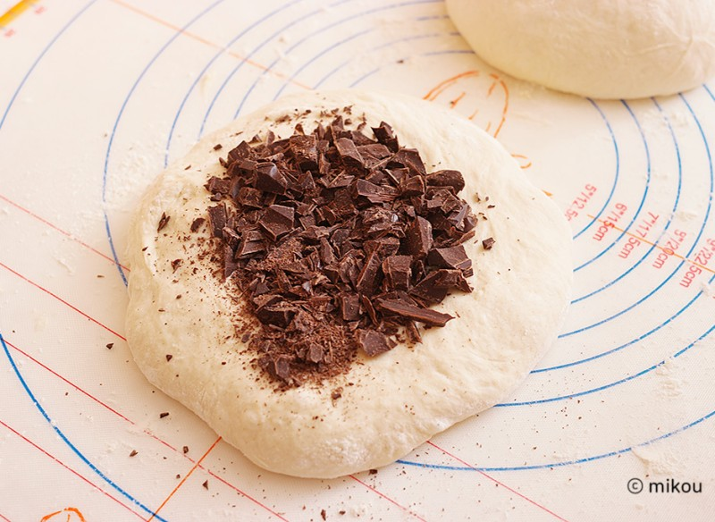
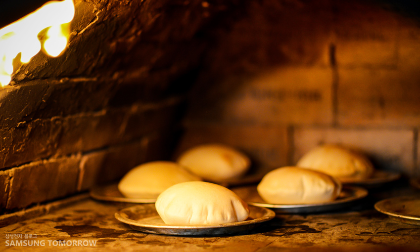
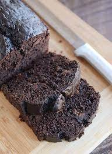

How to make a Chocolate bread.
Let's Start
- First,bring flour,cocoa flour, Sugar,Egg, and milk
- Second, put flour, milk, egg in bowl.
- Third, mix little and put some sugar and cocoa flour.

- Fourth, when dough got a shape, pit some oil on the hand.
- Third, make any shape and put on paper foil.
- Sixth, bake 20min in 140*.

- Seventh, put cocoa flour and milk make a syrup.
- Last, when bake is finish put syrup inside of bread and enjoy it.
